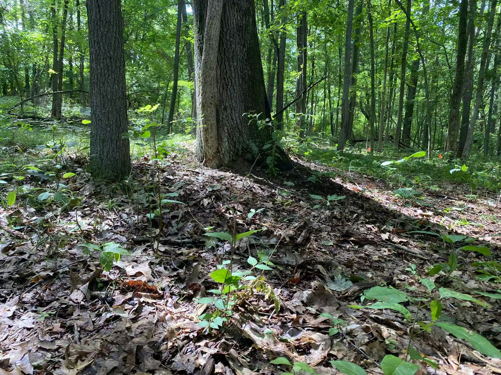
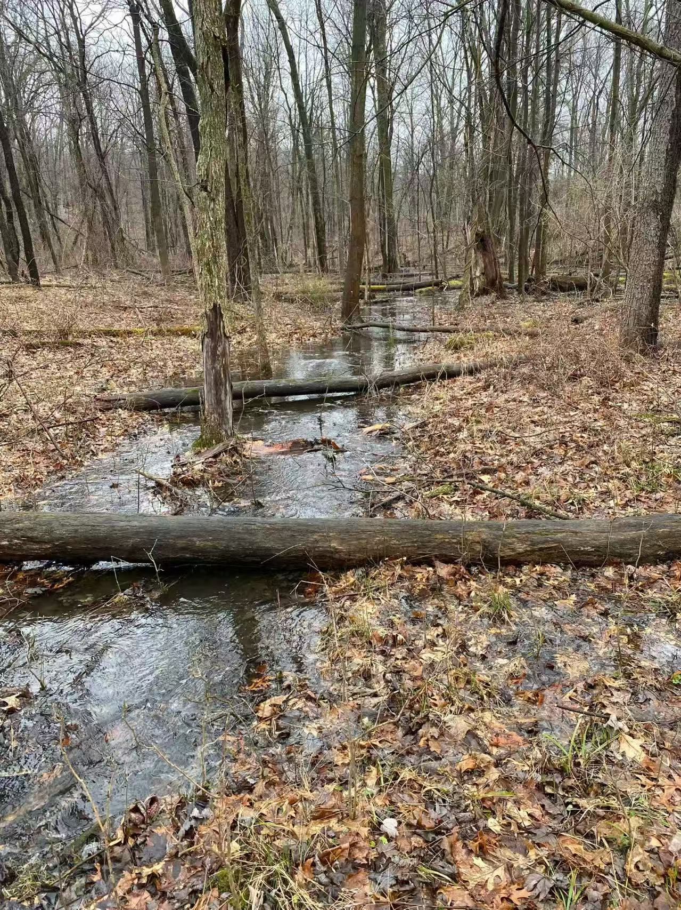
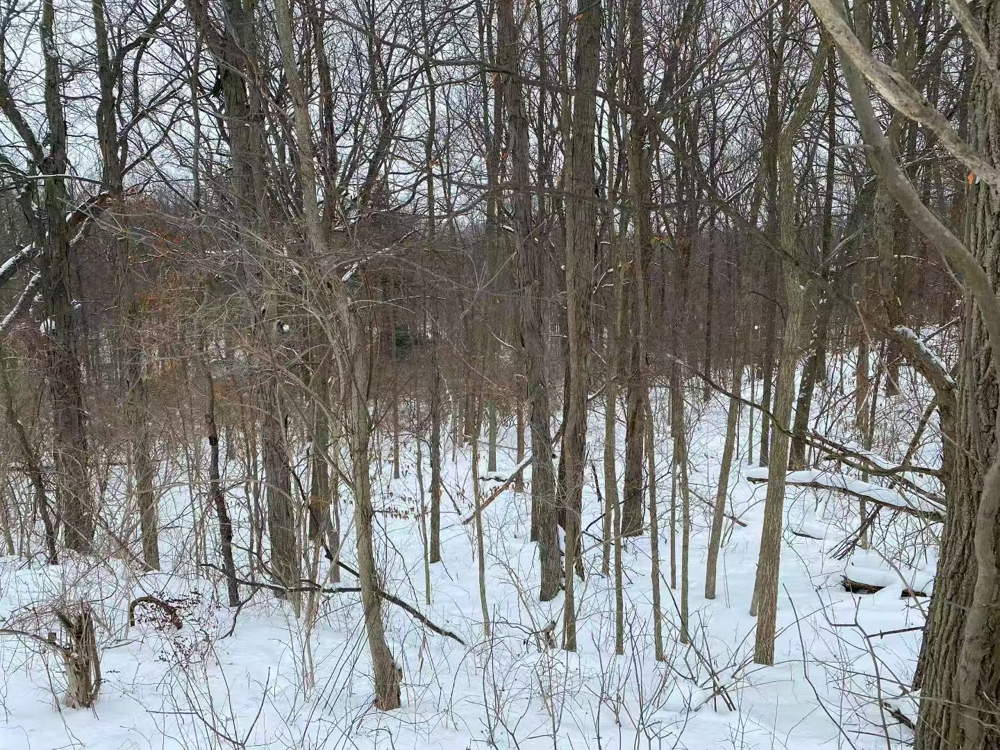
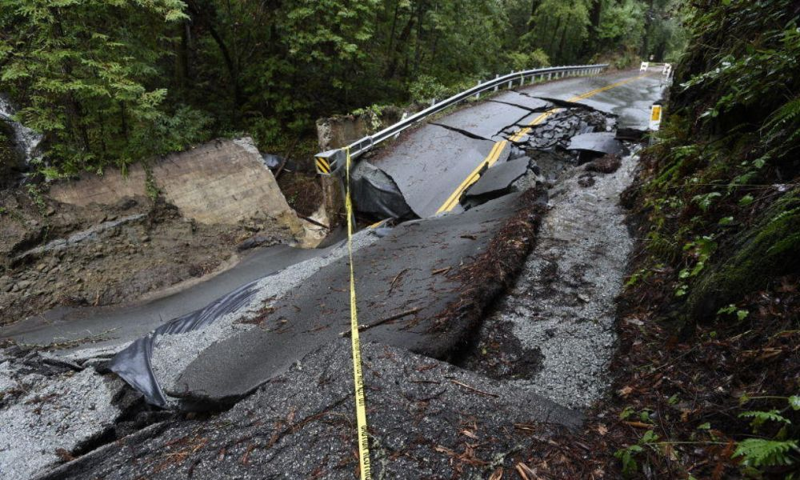
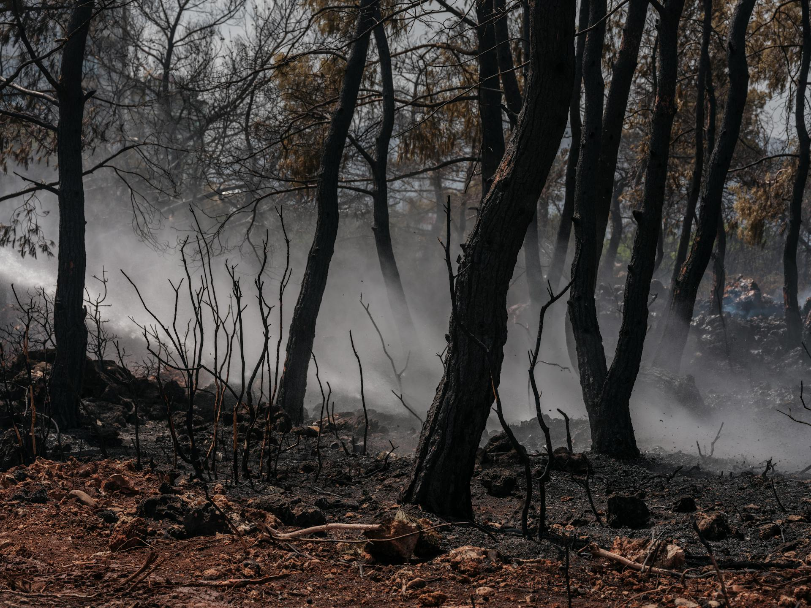
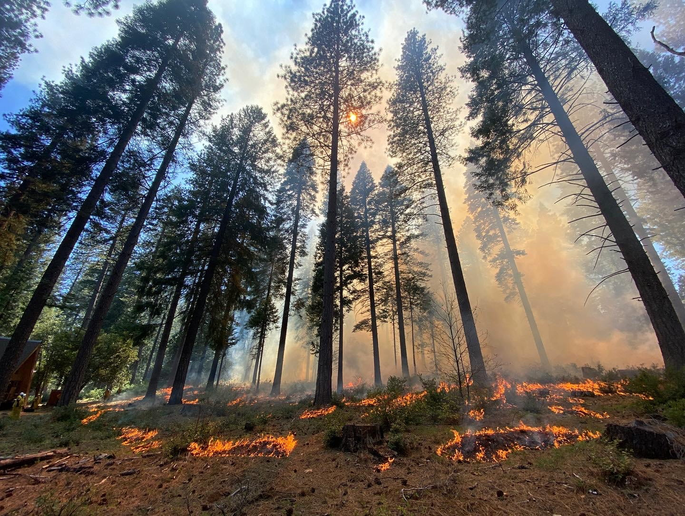
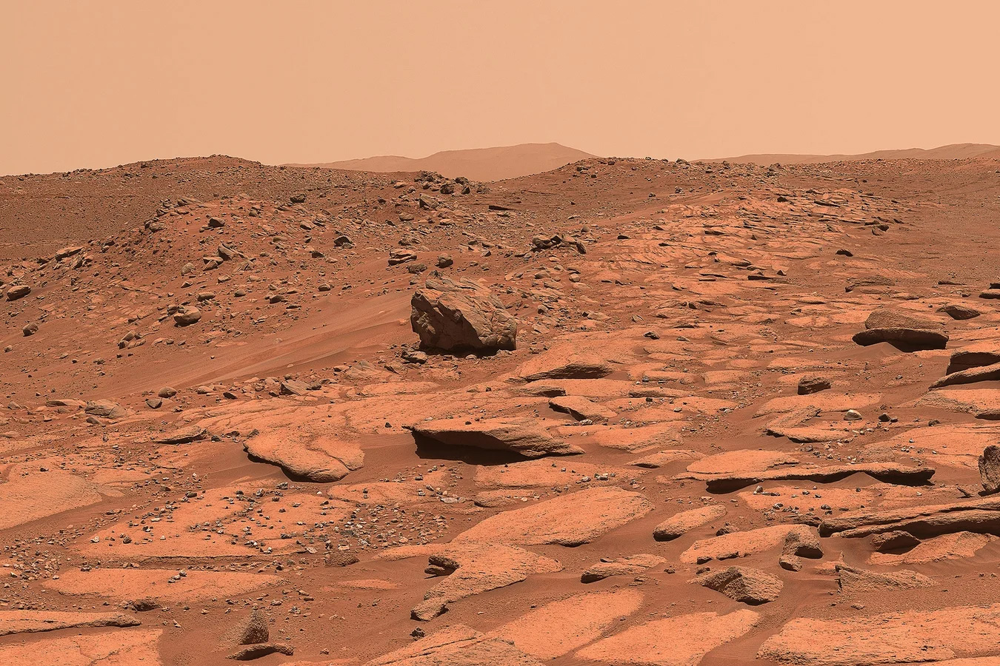
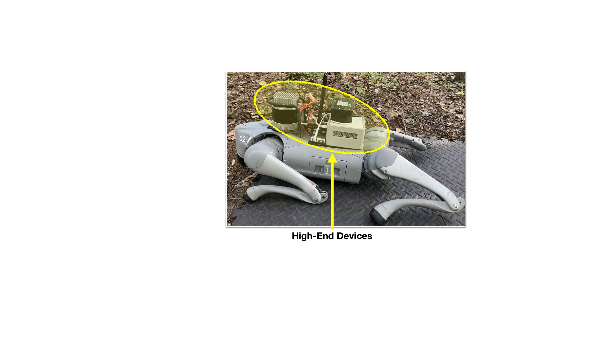

OVERVIEW
01 / Physical Open World







- Unreliable External Infrastructure: Cloud Services, Internet Connectivity, GPS, Wi-Fi ...
- Complex and Non-Stationary: Hard-to-Simulate and Hard-to-Predict
- Unknown Unknowns
On-Device Runtime Learning: Safely, Directly, and Locally Sensing, Learning, and Doing in Open World
02 /Building Blocks
01
Simplex
Safety Assurance
02
ACT-R
Human-Like Learning
03
Actor-Critic RL
Experience-Driven Learning & Action Evaluation
04
Edge-AI Device
Lightweight On-Device Computation & Real-Time Interaction
03 / Learning Aim: Low Cost and Super Performance
Navigation Pipeline Differences:
Device Differences:

● Unitree-L1 LiDAR: 21,600 points/s, 0.05–30 m range.

● Hesai-XT16 LiDAR: 320,000 points/s, 0.05–120 m range.
Off-Road Navigation Comparisons:
| Learning v.s Non-Learning | Trip 1 | Trip 2 | Trip 3 | Trip 4 |
|---|---|---|---|---|
| Runtime Learning: Low-End Devices | ||||
| Performance: Safe, Stable, Fast, and High-Precision Goal Arrival! | ||||
| Non-Learning: Low-End Devices | ||||
| Performance: Unstable, Slow, and Large Goal-Arrival Drift! | ||||
| Non-Learning: High-End Devices | ||||
| Performance: Unstable, Slow, and Large Goal-Arrival Drift! | ||||
04 / Baseline Comparisons
- Safety Violation
- Task Completion
- Dead-Zone Encounter
05 / Ablation Evaluations
- Safety Violation
- Task Completion
- Dead-Zone Encounter